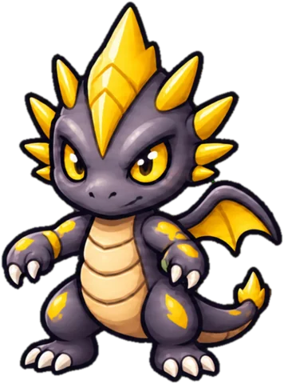

Tap a stage to read its story.
Pyxlet is a compact dark-grey dragon hatchling with a stubby muzzle and yellow-gold spines emerging from its head and back like oversized thorns. Its body is sturdy and it plants itself on the ground with the confidence of a creature that already knows it will be large. Found at the upper mid-levels of dragon spire where the wind is strong and the light dim, it shelters in rock crevices and watches the upper storm with gold-tinted eyes. The guardians say Pyxlet hisses once per second when frightened and stops the instant the threat is gone - a useful clock in an emergency.
Field note: Pyxlet's gold spines produce a faint sparkling shimmer in moonlight; spire children say finding one after dark is three times as hard as finding one in daylight.
Dragon Spire. Pyxlet and its family are found in the Dragon Spire. See everyone who lives there.
Share a Bond Food that matches its types to become friends. Pyxlet loves:
A Bond Food is not a trick. It joins your spirit with the Kimuro's spirit, and only when it chooses you.
Print the Kimuro adventure packs: mazes, cards, a board game and Bond Mark medals.
See the printable packs